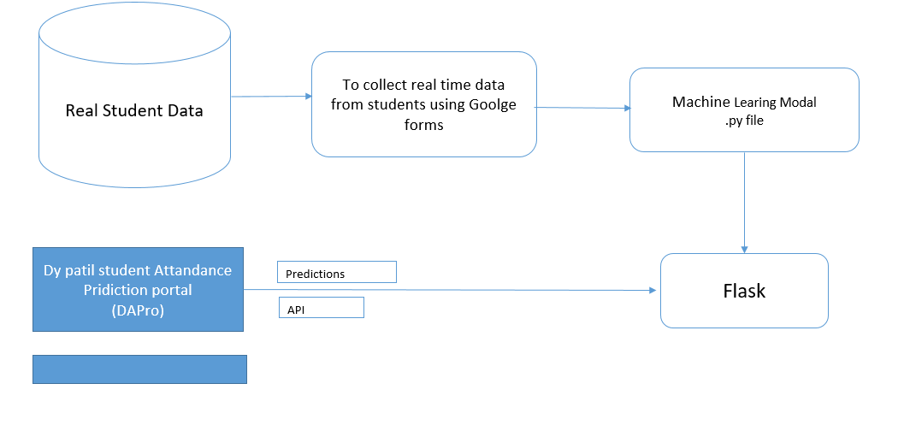
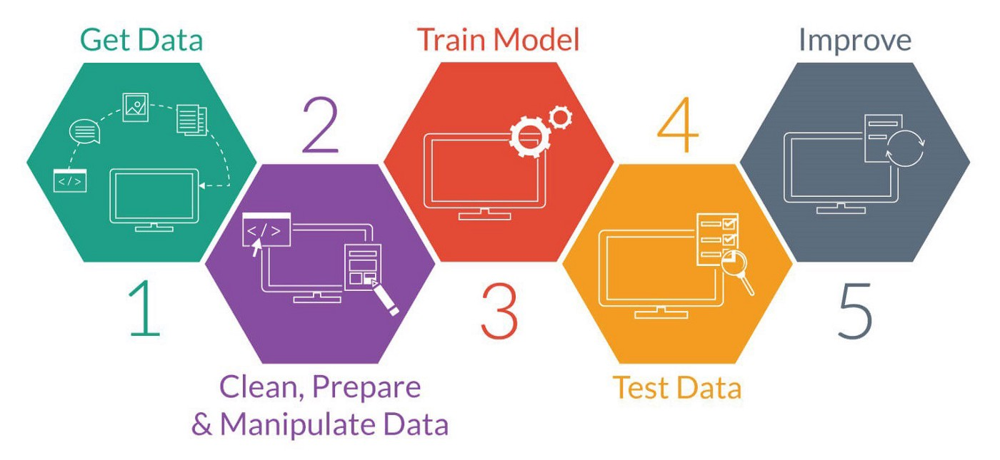
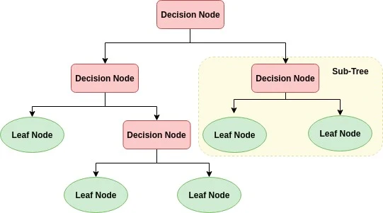
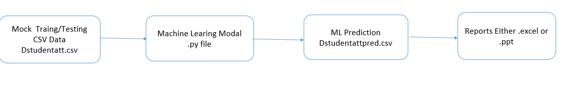
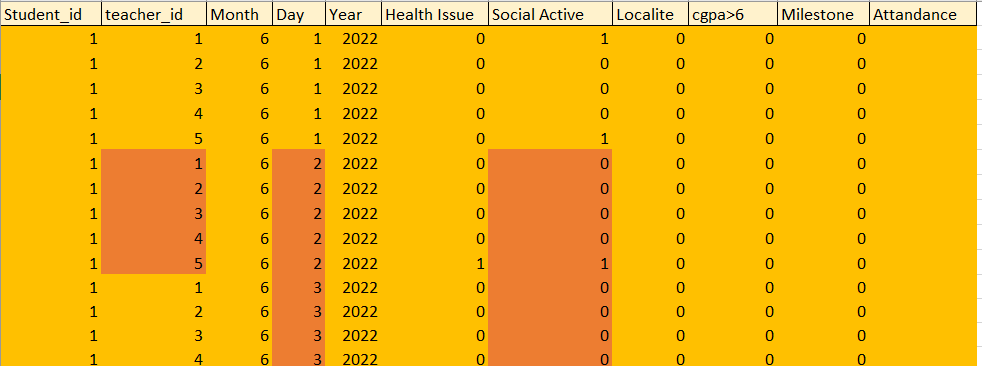
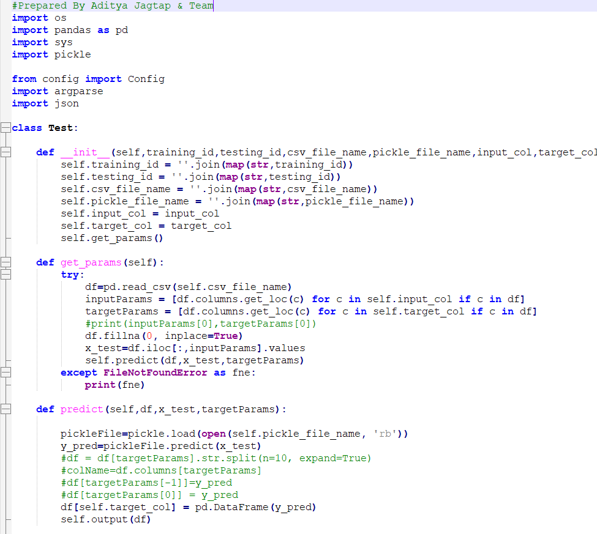
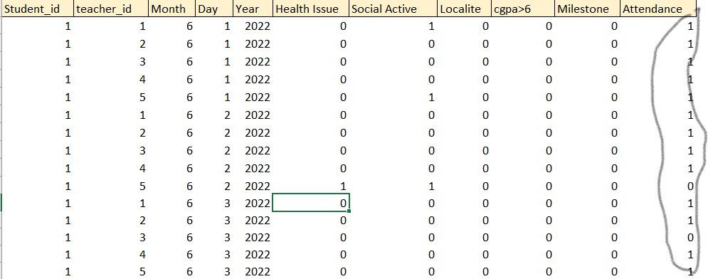

Abstract
This study is motivated by the lack of research on predicting class attendance in the field of pedagogy.
Frequently,
previous research conducted in the field of pedagogy concerned predicting students’ performance using class
attendance
as predictor, where little research focused on predicting class attendance. The aims to investigate the
probability of
predicting class attendance for students’ personal development, for professors’ preparation and
intervention, and to
optimize universities’ educational program are explained. The dataset obtained by the Student life study is
used to
conduct four experiments for predicting class attendance. The problem statement addressed in this thesis
reads as
follows: The techniques considered are Logistic Regression, Random Forest and Naïve Bayes. The main findings
are that
class attendance can be predicted based on python programming and can be display on web application.
About ML
• Machine learning (ML) is a type of artificial intelligence (AI) that allows software applications to
become more
accurate at predicting outcomes without being explicitly programmed to do so.
• Machine learning algorithms use historical data as input to predict new output values.
• Classical machine learning is often categorized by how an algorithm learns to become more accurate in its
predictions.
• There are four basic approaches supervised learning , unsupervised learning , semi-supervised learning and
reinforcement learning
• The type of algorithm data scientists choose to use depends on what type of data they want to predict.
• Supervised learning: In this type of machine learning, data scientists supply algorithms with labeled
training data
and define the variables they want the algorithm to assess for correlations. Both the input and the output
of the
algorithm is specified.
• Unsupervised learning: This type of machine learning involves algorithms that train on unlabeled data. The
algorithm
scans through data sets looking for any meaningful connection. The data that algorithms train on as well as
the
predictions or recommendations they output are predetermined.
• Semi-supervised learning: This approach to machine learning involves a mix of the two preceding types.
Data scientists
may feed an algorithm mostly labeled training data, but the model is free to explore the data on its own and
develop its
own understanding of the data set.
• Reinforcement learning: Data scientists typically use reinforcement learning to teach a machine to
complete a
multi-step process for which there are clearly defined rules. Data scientists program an algorithm to
complete a task
and give it positive or negative cues as it works out how to complete a task. But for the most part, the
algorithm
decides on its own what steps to take along the way.
Offline DYPro System Architecture
Data Preparation
• The mock dataset contains ____ data for ____ different students and __ attributes spanning both their
personal and
student life .
• The data has been cleaned using standard method that check for data consistency and however it is not
based on real
survey responses.
• In order to have a specific model some of these attributes have been neglected and finally 14 out of these
above
parameters were taken into consideration based on their relevance to our research.
• All the textual responses were given numerical weights according to their significance. 'Yes' is taken to
be 1, 'no'
to be 0 and a 'maybe' to be 0.5.
• All 'NaN' (not a number) cells were replaced with 0. 80 percent of the responses were used for training
the model
while the remaining 20 percent was utilized for testing.
• The dataset contains features which reflect human behaviors ; such behaviors may correlate differently in
other
geographic locations , Institutes , Professional Courses .
Data preparation Sample for month of Febuary from Utkarsha
Data Science Activity

Model Used in DYpro project
Decision Tree
A decision tree can be used to model multiple choices or if-else statements/decisions in a tree-like fashion. Here, decision trees are used to find the most contributing factors among the 6 features that are used. This is highly helpful, as now more attention can be given to these areas and necessary steps are taken on those lines.

Gaussian Naive Bayes Classifier
A Gaussian Naïve Bayes classifier is a probabilistic Machine learning model that is used for classification task . The crux of the classifier is based on the Bayes theorem. Naïve Bayes is also used to discriminate different objects based on certain features. Naïve Bayes is Probabilistic in nature.

Python Execution Flow Diagram
Input Data File/Testing File for Python Code
Python Sample Code
Output Data File /Testing Output for Python

GUI Report
Click Here
Conclusion
• Education institutes are very concerned about the behavior of students towards punctuality at class.
• However those Students who are habitually late and looking for excuses to bunk/miss the lecture can be a
real
candidate for poor performance or dropouts.
• In order to avoid the critical issue of absenteeism this project work with the help of structured
methodology using
machine learning and different models have been presented which can determine the behavior of such students
towards
punctuality at class at the very early stage of their semester.
• The results obtained have demonstrated lower accuracy by the proposed model due to mock data however can
show a great
potential to be scaled by using a big dataset for real-world problems.
• The most important contribution of the paper is to analyze the parameters used for student analysis and
devise a deep
learning-based model to make prediction of absenteeism behavior in student.
• It also highlights the contributions of different factors that can possibly result in absenteeism of
student and is a
good source for institute to further look into those areas.